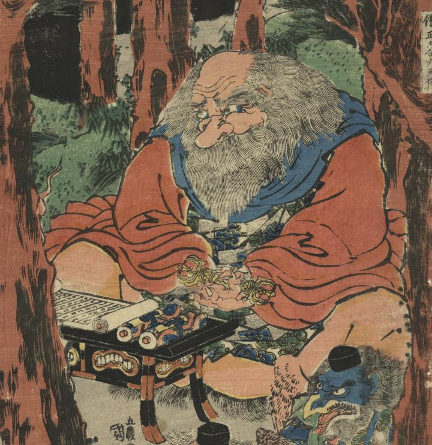

僧正ケ谷大天狗が、法衣に袈裟を着けた姿で座り、牛若丸の様子を見ている。手には、三鈷杵を持ち、目の前には、経巻がある。
著作者：五渡亭國貞／出典：親書誌：U426_nichibunken_0425：牛若鞍馬兵術励／日付：2015／資源識別子：U426_nichibunken_0425_0001_0000
Copyright (c)2010- International Research Center for Japanese Studies, Kyoto, Japan. All rights reserved.